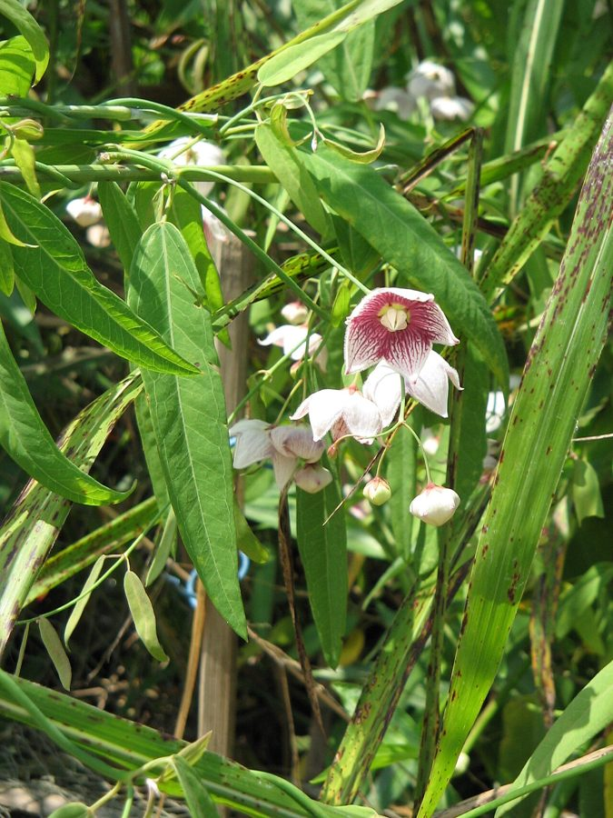

दूधी बेलRosy Milkweed Vine
Oxystelma wallichii · Apocynaceae · FLR-0250

- Scientific name वैज्ञानिक नाम
- Oxystelma wallichii (Wight & Arn.) Huber
- Family कुल
- Apocynaceae
- Hindi हिंदी
- दूधी बेल
- Local names स्थानीय नाम
- dudhi bel, dudhi bail, rosy milkweed, oxystelma
- Status here यहाँ की स्थिति
- native
- Movement आवागमन
- Resident, here all year
- Known from कहाँ दर्ज
- Others have published records from the wider Awadh–Purvanchal plain, none yet from Basti–Ayodhya अवध–पूर्वांचल से दूसरों के प्रकाशित अभिलेख, बस्ती–अयोध्या से अभी नहीं
- IUCN IUCN
- not evaluated
- Review समीक्षा
- audited and independently read
When to look कब देखें
Present all year. साल भर मौजूद।
Uses and possibilities उपयोग और संभावनाएँ
“Traditional medicine” means a documented traditional use, not a claim that it works. Nothing on this page is medical advice.
Drawn from the documented uses in the profile below, where each is labelled traditional, current or a research lead. All uses →
Tell it apart from इनसे अलग पहचानें
दूधी बेल / Rosy Milkweed Vine
Oxystelma wallichii (Wight & Arn.) Huber — Apocynaceae
दूधी बेल (रोज़ी मिल्कवीड वाइन) — एक नाज़ुक, चढ़ने वाली बेल जो पूर्वी उत्तर प्रदेश के बाड़ों और झाड़ियों पर आसानी से बढ़ती है। पूरा पौधा तोड़ने पर एक सफ़ेद दूध जैसी लेटेक्स निकलती है, जिससे इसका नाम "दूधी बेल" है। हल्के गुलाबी या पीले फूल गर्मी में दिखते हैं, जो सुंदर और सुगंधित होते हैं। यह बेल तितलियों को आकर्षित करती है, विशेषकर Danaid Eggfly और अन्य कीटों को।
Quick Identification त्वरित पहचान
| Feature | Description |
|---|---|
| Plant habit | Twining climber, herbaceous to semi-woody, 2–4 m, light and delicate |
| Leaves | Opposite, ovate to elliptic-oblong, 4–10 cm, glabrous, margins entire |
| Stems | Slender, glabrous, green or purplish, producing white latex when broken |
| Flowers | Small (0.8–1.2 cm), rosy-pink or pale yellow, sweetly scented, in small cymose clusters |
| Fruits | Long, slender follicles, 8–15 cm, containing small, flat seeds with silky hairs |
| Latex | Milky white, present in all parts when broken |
Field tip: Look on fences and hedges for a delicate, twining vine with opposite leaves. Break a stem and a white latex will ooze out, making identification simple. The small, pink or pale yellow flowers are fragrant and appear in clusters.
हिंदी — कैसे पहचानें: सफ़ेद दूध वाली बेल, गुलाबी फूल, पत्तियाँ आमने-सामने, बहुत नाज़ुक।
Morphology आकारिकी
Biometrics:
| Measurement | Range |
|---|---|
| Shoot length | 2–4 m |
| Leaf length | 4–10 cm |
| Leaf width | 2–6 cm |
| Flower diameter | 0.8–1.2 cm |
| Follicle length | 8–15 cm |
| Follicle width | 0.4–0.6 cm |
Stems: Slender, twining, green or purple-tinged, glabrous, with milky latex in all tissues.
Leaves: Opposite, simple, ovate to elliptic-oblong, apex acute or acuminate, base rounded, margins entire, glabrous on both surfaces.
Flowers: Small, in terminal or axillary cymes, color varying from pale yellow to rosy pink, fragrant. Corolla five-lobed, rotate to sub-campanulate; crown of five fimbriate lobes at the throat (characteristic of Asclepiadoideae).
Fruits: Long, slender follicles, divergent in pairs, linear-lanceolate, apex acute, containing flattened, ovate seeds with long, silky coma (hair-like appendages) for wind dispersal.
हिंदी: सफ़ेद दूध, पत्तियाँ सीधी सामने-आमने, बहुत लंबी फलियाँ, पतले बीज।
Behaviour & Ecology व्यवहार और पारिस्थितिकी
A delicate climbing vine, twining by its growing tips around any available support. It grows vigorously during the monsoon and through autumn. The plant is largely deciduous in the hot season but retains some leaves. The flowers are highly fragrant and attractive to insects, particularly butterflies and small bees. The long follicles split to release seeds with silky hair-like structures that aid wind dispersal. The white latex is a defense against herbivores; though not toxic, the plant is avoided by most grazing animals.
हिंदी: तेज़ी से बढ़ता है, तितलियों को आकर्षित करता है, हवा से बीज फैलाता है, जानवर खाते नहीं हैं।
Life Cycle / Phenology जीवन चक्र
| Month / season | Event |
|---|---|
| April–May | Reduced growth or dormancy in heat |
| June–July | New leaves flush pale green with monsoon onset |
| August–October | Vigorous growth; flowering begins in late August |
| September–November | Peak flowering; fruits mature and split |
| November–February | Continued flowering; seed dispersal; gradual leaf fall in late winter |
Seeds germinate readily after dispersal if soil moisture is adequate. The plant is long-lived and can regenerate from underground parts if damaged above ground.
हिंदी: मई-जून में धीरे, बरसात में तेज़, गर्मी के फूल और फल पके, सर्दी में पूरा रंग।
Associated Species / Interactions संबंधित प्रजातियाँ
- Climbing companions: Field Bindweed, Veld Grape on hedges
- Butterfly host: important for Danaid Eggfly and other milkweed-feeding Lepidoptera
- Hedge companions: grows alongside Neem, ficus, and Mango in old gardens
Pests and Diseases कीट और रोग
As a milkweed, the plant is the host for various Lepidoptera larvae, particularly Danaid Eggfly. These caterpillars are harmless to humans and are often appreciated. Occasionally affected by powdery mildew in humid weather.
Agricultural / Human Relevance कृषि प्रासंगिकता
Agricultural status. No direct agricultural significance; found mainly on hedges and waste ground. Does not interfere with crop cultivation.
Ethnobotanical and medicinal status. The plant has limited documented traditional use but is known in Ayurvedic practice and regional herbalism. The latex is said to have mild medicinal properties, though no specific claims are established.
Ecological value. Highly valued as a butterfly plant, particularly for Danaid Eggfly larvae; increasingly cultivated in gardens specifically to attract butterflies.
Today. Of growing interest to butterfly enthusiasts and gardeners; occasionally offered for sale in nurseries focusing on butterfly-host plants.
हिंदी: किसानों के लिए कोई फायदा या नुकसान नहीं, लेकिन तितलियों के लिए बहुत ज़रूरी है।
Expected Locally स्थानीय रूप से अपेक्षित
Not a field record. Written from published accounts for eastern Uttar Pradesh. No confirmed local sighting yet — if you have seen it, that is what the atlas needs.
अभी तक स्थानीय पुष्टि नहीं। यह विवरण प्रकाशित स्रोतों से है, किसी अवलोकन से नहीं।
GBIF holds published records from the wider Awadh–Purvanchal plain. To be expected on hedges, fence lines, and scrubby ground from June through February. Likely present but not yet formally recorded.
Distribution वितरण
Global range: Native to India and Sri Lanka; found from tropical Asia.
In India: Widespread in the Indo-Gangetic plain and in southern and eastern India.
In Uttar Pradesh: Found in scattered locations, particularly in gardens and hedge systems.
In Basti district / eastern UP: Likely present but not yet formally confirmed.
Research Questions शोध प्रश्न
Anyone can investigate these | कोई भी इन प्रश्नों की जाँच कर सकता है
- Where do you find Oxystelma wallichii in your village, and how many plants are there? / आपके गाँव में यह बेल कहाँ-कहाँ है? — Map all hedges and estimate plant numbers.
- Does this plant really attract Danaid Eggfly and other butterflies more than other plants? / क्या यह सच में तितलियों को आकर्षित करती है? — Compare butterfly visits on this vine versus others.
- How far can the seeds disperse on the wind? / बीज कितनी दूरी तक उड़ते हैं? — Release marked seeds and track them.
- Do any animals or birds eat the leaves or fruits? / कोई जानवर इसे खाता है? — Observe for herbivory signs.
- How long does it take for a seedling to reach a certain size? / एक बीज से पौधा कितने समय में बड़ा होता है? — Grow seedlings and measure growth rate.
Similar Species मिलती-जुलती प्रजातियाँ
| Species | How to tell apart | हिंदी |
|---|---|---|
| Giant Milkweed (Calotropis gigantea) | Larger, woody shrub not a climber; leaves grey-green and woolly; flowers larger and more showy | बड़ा झाड़, झूल पर नहीं चढ़ता |
| Hoya species | Similar latex but leaves thicker and more leathery; flowers in ball-like umbels | मोटी पत्तियाँ, गेंद जैसे फूल |
Field rule: A delicate, thin-stemmed twining vine with opposite leaves, small rosy-pink fragrant flowers, and milky latex is Oxystelma wallichii.
Taxonomy & Classification वर्गीकरण
Original description. Originally described by Wight and Arnott as Asclepias wallichii in 1834; transferred to Oxystelma by Huber. Named after Nathaniel Wallich, a botanist of Bengal.
Subspecies. Monotypic — no subspecies are currently recognised.
Family and order placement. Apocynaceae (the dogbane family), order Gentianales. The genus Oxystelma contains about 15 species in tropical Asia and Africa.
Phylogenetic notes. Oxystelma belongs to the Asclepiadoideae subfamily of Apocynaceae, related to milk-weed and asclepiad genera.
IUCN status rationale. Not evaluated. Widespread and not threatened. No conservation concern.
Photo Gallery फोटो गैलरी
Photos needed आवश्यक फोटो
- [ ] Whole vine on a hedge or fence, September (पूरी बेल)
- [ ] Pink flowers close-up (गुलाबी फूल)
- [ ] Follicles with dispersing seeds (फलियाँ और बीज)
No photos yet — add field photos to media/species/rosy_milkweed_vine/ and run node scripts/sync_photos.js.
References संदर्भ
- Wight, R. & Arnott, G.A.W. (1834). Prodromus Florae Peninsularis Indiae Orientalis, vol. 2. Madras. [original description as Asclepias wallichii]
- Hooker, J.D. (1882). The Flora of British India, vol. 4. L. Reeve, London. (Oxystelma)
- Duthie, J.F. (1903). Flora of the Upper Gangetic Plain and of the Adjacent Siwalik and Sub-Himalayan Tracts. Government Printing, Calcutta.
- Chopra, R.N., Nayar, S.L. & Chopra, I.C. (1956). Glossary of Indian Medicinal Plants. CSIR, New Delhi.
- Kehimkar, I. (2008). The Butterflies of India, 2nd ed. Bombay Natural History Society and Oxford University Press, New Delhi.
- GBIF Occurrence Data — Oxystelma wallichii, India (2026).
Source file: species/flora/climbers/rosy_milkweed_vine.md